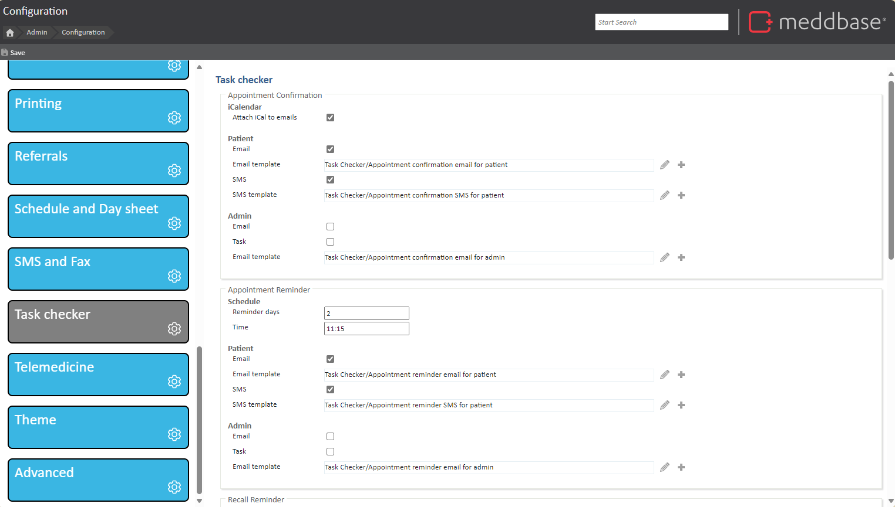
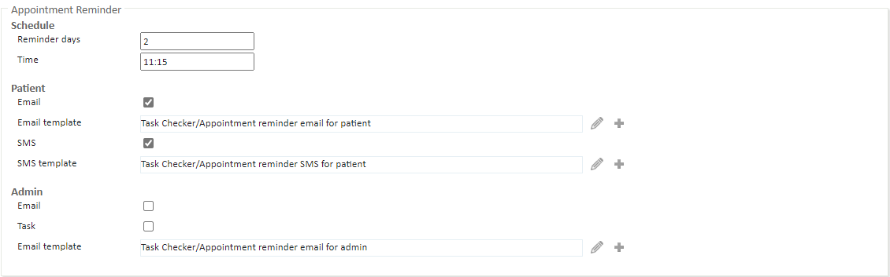

Meddbase can be set up to send out automatic SMS and email reminders to patients at a set time and number of days prior to the appointment.
What is the purpose of the article?
The purpose of this article is to explain how to set up appointment reminders and the configurable settings.
Set up Appointment Reminders
To configure this feature, go to Admin > Configuration>Task checker. In this area you will find all settings and templates used for appointment confirmations, reminders, recall reminders, birthday reminders, service reminders and questionnaire reminders.

Under the Appointment Reminder section, you will see an option for email and SMS reminder settings.

Schedule:
Reminder days - Define the number of days prior to the appointment you wish the reminder to be sent.
Time - At what time would you wish the reminder to be sent. (This must be between 08:00 and 19:00 GMT)
Patient:
Email - Enable this to have email reminders be sent to patients.
Emailtemplate - Provide the email template you wish use when the reminder is sent.
SMS - Enable this to have SMS reminders be sent to patients.
SMS template - Provide the SMS template you wish to use when the reminder is sent.
Admin:
Email - Enable this for Task Admin role group members to recieve appointment reminders to their email.
Task - Enable this for a task to be generate for appointment reminders, this will go in the Task work box for Task Admin role group members.
Email Template - Provide the email template you wish to use when a reminder is sent to an admin.
Hit save at the top configuration page to save these settings.